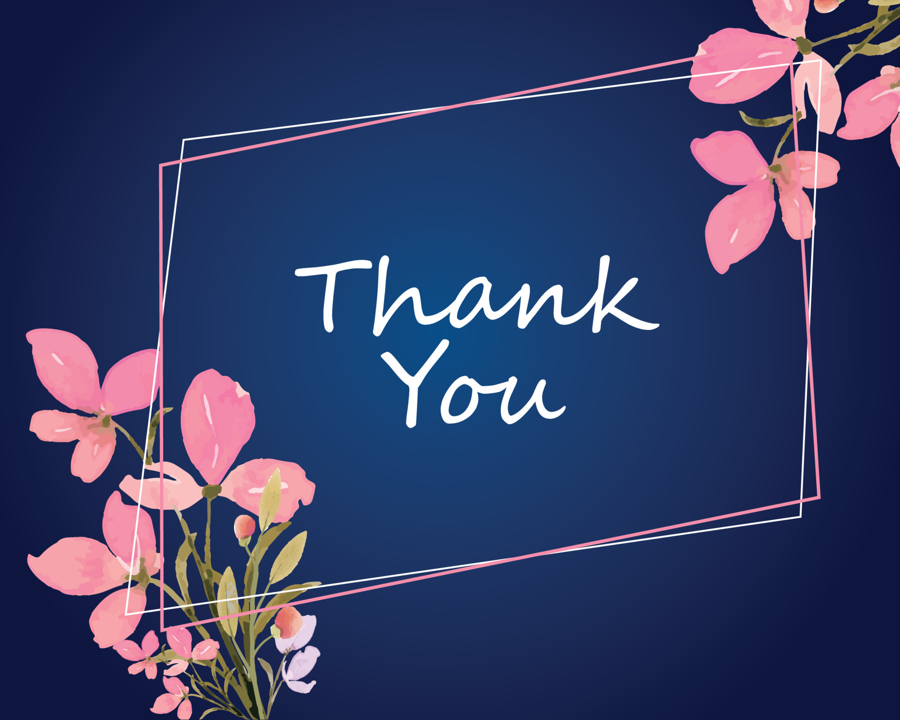

Bridging communication gaps with AI-powered sign language interpretation.
Explore ServicesInSync is dedicated to breaking communication barriers for the deaf and hard-of-hearing community using AI and computer vision.
✔️ Real-time sign language detection
✔️ AI-powered translation to text & speech
✔️ Inclusive accessibility for individuals and businesses
Waiting for signs...
üì© Email: support@insync.com
üìû Phone: +91 98765 43210
üìç Location: India
